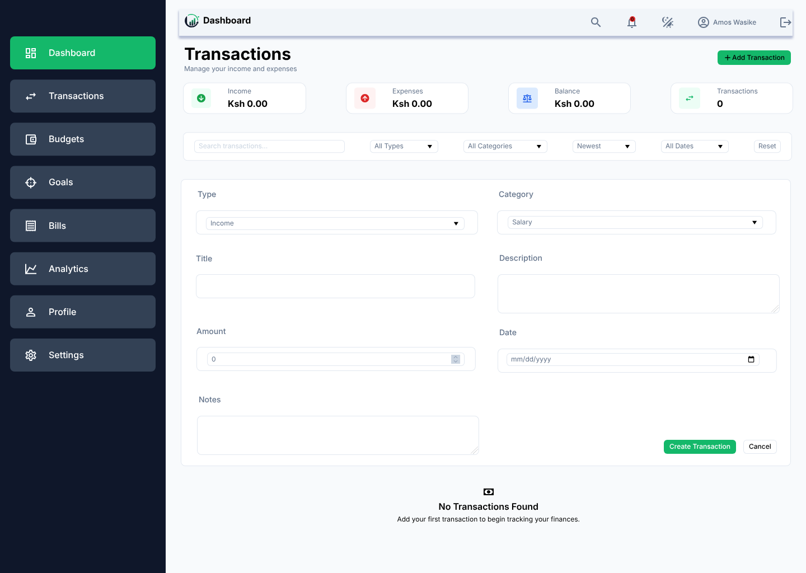
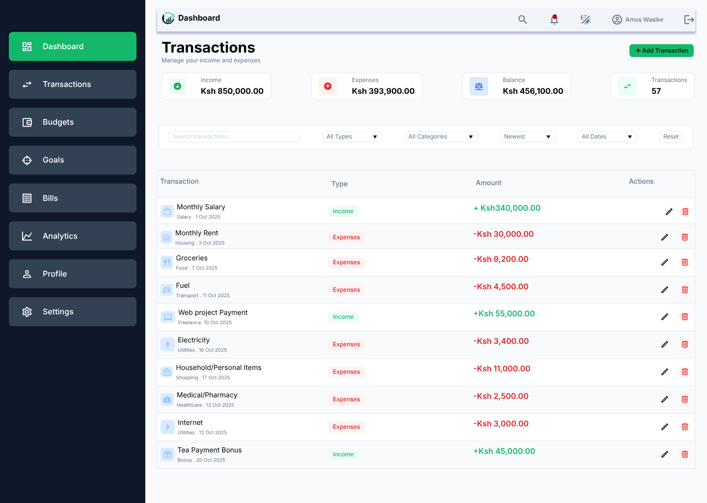

TRANSACTIONS
Keep everyday financial activity organized.
Record income and expenses with amounts, dates, categories, descriptions, and notes. Keep your everyday financial activity organized in one place.
Transaction records provide the foundation for understanding spending, income, cash flow, and budget activity.
- Record income and expenses
- Categorize financial activity
- Search and filter transactions
- Review transaction summaries

